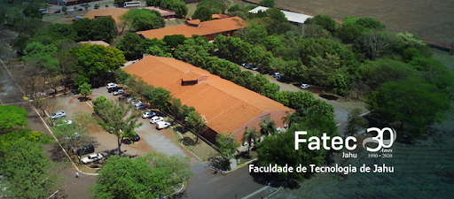
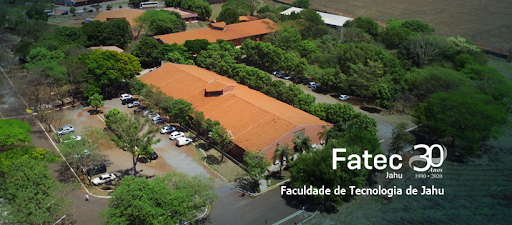

SOBRE A FATEC
A Faculdade de Tecnologia de Jahu – FATEC-JAHU é uma Instituição
Pública de Ensino Superior
que oferece cursos de graduação para formação de Tecnólogos, visando atender segmentos atuais
e emergentes da atividade econômica.
- Missão: Promover a formação de cidadãos e profissionais altamente qualificados capazes de desenvolver a sociedade em todos os seus aspectos.
- Visão: Através do ensino, pesquisa e extensão, ser reconhecida pela comunidade científica e sociedade em geral, como um Centro de referência Tecnológica.
- Valores: Contribuir na formação de cidadãos e profissionais que tenham consciência ética, competência, responsabilidade e compromisso social.
Ela pertence ao Centro Estadual de Educação Tecnológica “Paula Souza”,
uma autarquia estadual ligada à Secretaria de Ciência, Tecnologia e Inovação.
O Centro Paula Souza administra 224 Escolas Técnicas Estaduais (ETECs)
e 76 Faculdades de Tecnologia (FATECs) no Estado de São Paulo.
A Faculdade de Tecnologia de Jahu foi criada pelo Decreto n.º 31.255, de 23 de fevereiro de 1990,
retificado por publicação do D.O.E. de 01/03/1990. Pelo Decreto n.º 39.471, de 07 de novembro de
1994,
foi dada nova redação a dispositivo que especifica do Decreto 31.255, de 23 de fevereiro de 1990.
 

- Está localizada no Município de Jaú, à Rua Frei Galvão, s/n.º, no Bairro Jardim Pedro Ometto.
Contatos:
- Email: f020dir@cps.sp.gov.br
- Tel: (14) 3622-8280 / 3622-8037 / 3621-9044